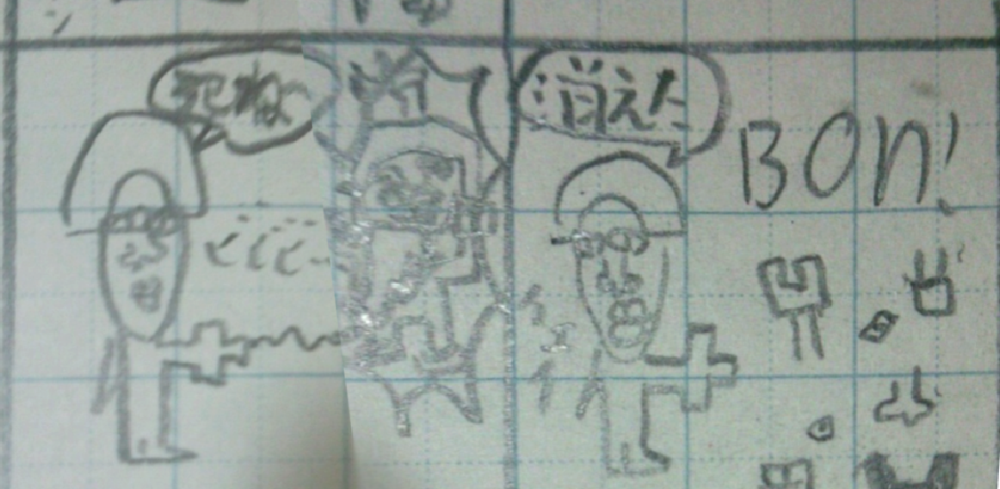
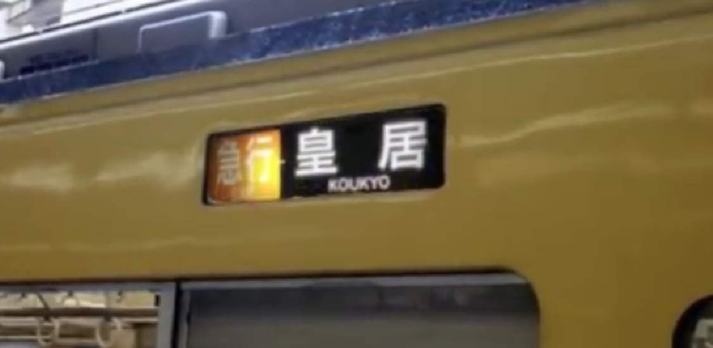
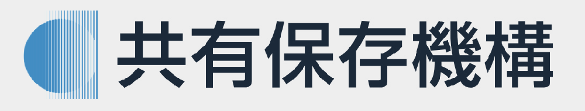

<title>菊阿学会 SSO共有保存機構</title>
<font size="5" face="sans-serif">

<!-- ▇▇ ドロップメニュー▇▇-->
<!DOCTYPE html><head><meta charset="UTF-8"><style>.my-sticky {
 position: sticky;
z-index: 100; 
 top: 0;

background-color: gray;

}
#dropmenu { display:flex; justify-content:center; 
 list-style-type: none;
 width: 960px;margin: 0 auto;
 padding: 0;
}
#dropmenu li {
 position: relative;
 width: 26%;
 margin: 0;
 padding: 0;
 text-align: center;
}
#dropmenu li a {
 display: block;
 margin: 0;
 padding: 16px 0;
 background: #ffffff;
 color: #717171;
 font-size: 28px;
 font-weight: bold;
 line-height: 1;
 text-decoration: none;
}
#dropmenu li ul {
 list-style: none;
 position: absolute;
 z-index: 100;
 top: 100%;
 left: 0;
 width: 100%;
 margin: 0;
 padding: 0;
}
#dropmenu li ul li {
 overflow: hidden;
 width: 100%;
 height: 0;
 color: #717171;
 transition: .2s;
}
#dropmenu li ul li a {
 padding: 13px 15px;
 background: #ffffff;
 text-align: left;
}

#dropmenu >li:hover >a { background: #CCD6DD }
#dropmenu >li:hover li:hover >a { background: #CCD6DD }
#dropmenu >li:hover >ul >li {
 overflow: visible;
 height: 55px;
}

 </style></head><body><ul class="my-sticky"id="dropmenu"> 
<li><a href="#">メニュー</a><ul>
<li><a href=" ">学会について</a></li>
<li><a href=" ">資料提供について</a></li>
<li><a href=" ">広報</a></li>
<li><a href=" ">サイトマップ</a></li>
</ul></li> 

<li><a href="https://drive.google.com/drive/folders/1-dJtiGTfasUyqvrYvwaxsQAqornoVnwy">資料図書館</a>
</li>

<li><a href="#">機構組織</a><ul>
<li><a href=" ">情報資料部</a></li>
<li><a href=" ">物的資料部</a></li>
</ul></li> 

<li><a href="#">姉妹機構</a><ul>
<li><a href="https://acs-ed.github.io/acs/3430141214159265358979.html">菊阿学会</a></li>

<li><a href="https://acs-ed.github.io/avirytionary/">新菊阿辞典</a></li>
<li><a href="https://acs-ed.github.io/avirypedia/">菊阿百科</a></li>
<li><a href="https://acs-ed.github.io/aviribrary/">菊阿文庫</a></li>

<li><a href="#">倫義協振会</a></li>
<li><a href="https://ilrn00.wixsite.com/iaofficial">関皇省</a></li>
</ul></li>

 </ul>
</body>

<!-- ▇▇ ドロップメニュー終了▇▇-->

<meta charset="utf-8"><meta name="viewport"content="width=device-width,initial-scale=1.0"><link rel="stylesheet"type="text/css"href="https://coco-factory.jp/ugokuweb/wp-content/themes/ugokuweb/data/reset.css"><link rel="stylesheet"type="text/css"href="https://cdn.jsdelivr.net/npm/slick-carousel@1.8.1/slick/slick.css"><style>@charset "utf-8";
/* ================
スライダーのためのcss
================= */
.slider {
 position:relative;
z-index: 1;
/*↑z-indexの値をh1のz-indexの値よりも小さくして背景に回す*/
height: 100vh;/*スライダー全体の縦幅を画面の高さいっぱい（100vh）にする*/
}
/* 背景画像設定 削除
.slider-item01 {
 background:url( );
.slider-item02 {
 background:url( );
}
.slider-item03 {
 background:url( );
}
*/
.slider-item {
 width: 100%;/*各スライダー全体の横幅を画面の高さいっぱい（100%）にする*/

 background-repeat: no-repeat;/*背景画像をリピートしない*/
 background-position: center;/*背景画像の位置を中央に*/
 background-size: cover;/*背景画像が.slider-item全体を覆い表示*/
}
.slider-item img { width: 100%; height:100%; } /* +++++ 追加 +++++ */

/*矢印の設定*/
/*戻る、次へ矢印の位置*/
.slick-prev, 
.slick-next {
 position: absolute;/*絶対配置にする*/
z-index: 3;
 top: 10%;
 cursor: pointer;/*マウスカーソルを指マークに*/
 outline: none;/*クリックをしたら出てくる枠線を消す*/
 border-top: 2px solid #ccc;/*矢印の色*/
 border-right: 2px solid #ccc;/*矢印の色*/
 height: 0px;
 width: 0px;
}
.slick-prev {/*戻る矢印の位置と形状*/
 left:2.5%;
 transform: rotate(-135deg);
}

.slick-next {/*次へ矢印の位置と形状*/
 right:2.5%;
 transform: rotate(45deg);
}
/*ドットナビゲーションの設定*/
.slick-dots {
position: relative;
z-index: 3;
 text-align:center;
margin:-20px 0 0 0;
}

.slick-dots li {
 display:inline-block;
margin:0 5px;
}
.slick-dots button {
 color: transparent;
 outline: none;
 width:6px;/*ドットボタンのサイズ*/
 height:6px;/*ドットボタンのサイズ*/
 display:block;
 border-radius:50%;
 background:#ccc;/*ドットボタンの色*/
}
.slick-dots .slick-active button{
 background:#333;/*ドットボタンの現在地表示の色*/
}
/*========= レイアウトのためのCSS ===============*/
ul{
margin:0;
padding: 0;
list-style: none;
}
a{
color: #fff;
}
a:hover,
a:active{
text-decoration: none;
}

h1{
position: absolute;
z-index: 2;
top: 50%;
left: 50%;
transform: translate(-50%, -50%);
text-align: center;
font-size:6vw;
letter-spacing: 0.1em;
text-transform: uppercase;
}
.wrapper{
position: relative;
}
.container{
background:#555;
}
.container p{
padding: 300px 0;
text-align: center;
color: #fff;
}
</style></head><body><div class="wrapper"><!-- この下修正 -->

<ul class="slider">
<li class="slider-item slider-item01"></li>
<li class="slider-item slider-item02"></li>
<li class="slider-item slider-item03"></li>
<li class="slider-item slider-item04"></li>

</ul>

<!-- ここまで --></div><script src="https://code.jquery.com/jquery-3.4.1.min.js"integrity="sha256-CSXorXvZcTkaix6Yvo6HppcZGetbYMGWSFlBw8HfCJo="crossorigin="anonymous"></script><script src="https://cdn.jsdelivr.net/npm/slick-carousel@1.8.1/slick/slick.min.js"></script><script>$('.slider').slick({


autoplay: true,//自動的に動き出すか。初期値はfalse。
autoplaySpeed: 5000,//次のスライドに切り替わる待ち時間
speed:1000,//スライドの動きのスピード。初期値は300。
infinite: true,//スライドをループさせるかどうか。初期値はtrue。
slidesToShow: 1,//スライドを画面に3枚見せる
slidesToScroll: 1,//1回のスクロールで3枚の写真を移動して見せる
arrows: true,//左右の矢印あり
prevArrow: '<div class="slick-prev"></div>',//矢印部分PreviewのHTMLを変更
nextArrow: '<div class="slick-next"></div>',//矢印部分NextのHTMLを変更
dots: true,//下部ドットナビゲーションの表示
 pauseOnFocus: false,//フォーカスで一時停止を無効
 pauseOnHover: false,//マウスホバーで一時停止を無効
 pauseOnDotsHover: false,//ドットナビゲーションをマウスホバーで一時停止を無効
 });
//スマホ用：スライダーをタッチしても止めずにスライドをさせたい場合
$('.slider').on('touchmove', function(event, slick, currentSlide, nextSlide){
 $('.slider').slick('slickPlay');
});
</script>


<br><br><br>

<div style="padding: 0px 15px; font-size:28">

<div style="border:2px solid #3f85c1; border-left-style:none; border-right-style:none; border-top-style:none;">
<b><font size="7">&nbsp;新着情報</font></b>
</div>

<!—▇▇ 広報ブロック▇▇—><div style="padding: 20px 0px 30px 0px; border: 1px solid #555555; 
border-left-style:none; border-right-style:none; border-top-style:none;"><div style="padding: 0px 15px; ">
<span style="font-size: 20px;">
<!—広報日—>
<font color="#555555">2022年03月04日</font>   &nbsp;&nbsp;
<!—タグ—>
<span style="display:inline-block; border:#1B56B4 1px solid; "><font color="#1B56B4">&nbsp;&nbsp;&nbsp;更新情報&nbsp;&nbsp;&nbsp;&nbsp;</font></span> </span><br>
<div style="padding: 6px 0px; "></div>
<!—本文—>
<font color="#32567c">
共有保存機構の頁を公開しました。
</font>
<!—本文終了—>
</div></div>
 <br> <!—▇▇ 広報ブロック終了 ▇▇—>

<!—▇▇ 広報ブロック▇▇—><div style="padding: 10px 0px 30px 0px; border: 1px solid #555555; 
border-left-style:none; border-right-style:none; border-top-style:none;"><div style="padding: 0px 15px; ">
<span style="font-size: 20px;">
<!—広報日—>
<font color="#555555">2022年02月02日</font>   &nbsp;&nbsp;
<!—タグ—>
<span style="display:inline-block; border:#1B56B4 1px solid; "><font color="#1B56B4">&nbsp;&nbsp;&nbsp;更新情報&nbsp;&nbsp;&nbsp;&nbsp;</font></span> </span><br>
<div style="padding: 6px 0px; "></div>
<!—本文—>
<font color="#32567c">
菊阿文庫・菊阿学資料図書館・共有資料会は統合し、共有保存機構として営業します。
</font>
<!—本文終了—>
</div></div></div>
 <br> <!—▇▇ 広報ブロック終了 ▇▇—>

</div>

<div style="border:2px solid #3f85c1; border-left-style:none; border-right-style:none; border-top-style:none;">
<b><font size="7">&nbsp;新着資料</font></b>
</div>


<br><br><center>
<a href="https://acs-ed.github.io/aviribrary/"></a><br><br>
<a href="https://acs-ed.github.io/acs/共資部.html"></a><br><br>
</center>
<br><br><br>
<!--
情報保存部
物的保管部
 ー だっち君/だっちょ君製品買収事業部


-->


<footer>

<div style="padding:0px 50px; background: #e4e4e4;  border: 3px solid #3f85c1; border-left-style:none; border-right-style:none; border-bottom-style:none;">
<div style="padding: 40px 0px 40px 0px; background: #eeeeee;">


<ul
style="list-style-type: circle ">
<li style="display: inline;">
お問合せ
</li>
<li style="display: inline;">
サイトマップ
</li>
<li style="display: inline;">
菊阿学図書館
</li>
<li style="display: inline;">
機構組織
</li>
<li style="display: inline;">
姉妹機構
</li>
</ul>

</div></div>


</footer>
